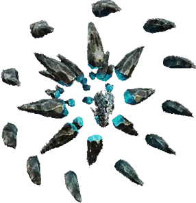

Открыть в интерактивной вики →

| Уровень | 65 |
|---|---|
| Прокачка | есть |
| Ранг в стае | 5 |
| Здоровье | 1800 |
| Мана | 1500 |
| Выносливость | 1100 |
| Статистика | Уровень: 65, ранг: 5, здоровье: 1800, мана: 1500, выносливость: 1100 |
Цена
500  Платина или
Платина или  Рецепт Сола
Рецепт Сола
Платина или Рецепт СолаВыкуп


Где взять
Покупается у Азарии  Азария
Азария
АзарияНавыки


Скины
Доп. информация
Требуемый уровень: 65
Призыв: Требуется Рецепт Сола
Цена выкупа: 3 × Средняя Фляга Здоровья, 3 × Средняя Фляга Выносливости, 3 × Средняя Фляга Маны у Азарии в Деревне друидов.
Может получать опыт — ДА
Описание
 | Водный элементаль, который больше, чем просто вода. Его сила — огонь, земля, энергия, лёд и пространство, где он может бушевать всеми своими стихиями. Атакует физически, издалека, ментально. Преобладают атаки по площади. Использует: Аура тени, Огненный дождь, Групповая зевота, Град, Ледяной снаряд, Магическая искра, Шаровая молния, Энергетические разряды, Буря, Высасывание души, Групповая аура холода. | |